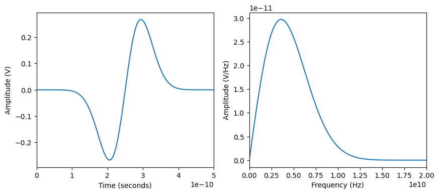

13. Signals and Audio
Code
 Demo Notebook
Demo NotebookSlides
 PDF Slides
PDF SlidesDATA 3464: Fundamentals of Data Processing
Signals and Audio
Charlotte Curtis November 17, 2026
Topic overview
- Introduction to signals
- Audio as a 1D signal
- Audio file formats
- A brief intro to signal processing
Resources used:
- Various textbooks from my undergrad
- DSPguide.com seems like a pretty good resource
What is a signal?
“A [continuous/discrete] signal is a function of independent variables that range over [a continuum/discrete] values” — Jerry L. Prince, Medical Imaging Signals and Systems
- Common notation: \(x(t)\) for continuous, \(x[n]\) for discrete
- Signals are discretized by sampling at some fixed interval \(dt\)
- The sampling rate is informed by the frequency content of the data: \[f_s \ge 2 f_{max}\] (but in practice is much higher)
Frequency content of a signal
- A discrete time domain signal can be represented as: \[x[n] = \sum_{k=0}^{N-1}\left[a_k\cos\left(\frac{2\pi k n}{N}\right) + b_k\sin\left(\frac{2\pi k n}{N}\right)\right]\]
- Or, using Euler’s formula \(e^{j\theta} = \cos\theta + j\sin\theta\): \[x[n] = \sum_{k=0}^{N-1}c_k e^{j\frac{2\pi k n}{N}}\] where the complex coefficients \(c_k = a_k + jb_k\) and \(j = \sqrt{-1}\)
Fourier Transform
- To figure out what the coefficients \(c_k\) are, we can use the Discrete Fourier Transform (DFT): \[X[k] = \sum_{n=0}^{N-1}x[n]e^{-j2\pi \frac{k}{N} n}\] where each element of \(X[k]\) is the coefficient \(c_k\) for frequency \(k\)
- This can also be inverted to get back the original signal: \[x[n] = \frac{1}{N}\sum_{k=0}^{N-1}X[k]e^{j2\pi \frac{k}{N} n}\]
Symmetry in the frequency domain
- Since a real-valued signal in time is composed of both sine and cosine components, its DFT has conjugate symmetry \[X[N-k] = X[k]^*\] where \(^*\) denotes the complex conjugate
- This means the negative-frequency half of the spectrum is redundant
- In practice, for real-valued data, we often only inspect:
- magnitude: \(|X[k]|\) to see “how much” of each frequency is present
- phase: \(\angle X[k]\) to see alignment/shift information
Frequency vs Time Domains

- \(f = \frac{1}{t} \implies\) short time = high frequency, small frequency = long time
Example signal: Audio
- Once you think of a signal as being a weighted sum of frequency components, you can do some fun things with it
- We can extract information, downsample, remove noise, etc
- Example: a typical .wav file
- Uncompressed
- 16 bits per sample (bit depth)
- 48 kHz sampling rate
- mono (1 channel) or stereo (2 channels)
What about .mp3? .ogg? I would use ffmpeg to convert to .wav
Preparing data
- Assuming we’re starting with a collection of audio files, we can either:
- Extract features and save as tabular data
- Use the raw audio signal as input
- We can preprocess and store the data, or preprocess on the fly
What considerations might go into this decision? What should always be stored regardless of the approach?
Preparing audio data
- Data for learning tasks is easiest to work with if it is consistent
- For audio signals, this could include:
- Decompressing and converting to .wav
- Downsampling
- Aligning and cropping primary signal
- Converting to mono/stereo
- Extracting features
- librosa can help with this (and can apparently handle mp3 too!)
Coming up next
- 2D signals (aka images)
- Assignment 3
- Written test 2
We’re in the home stretch!